About
a snapshot of my life
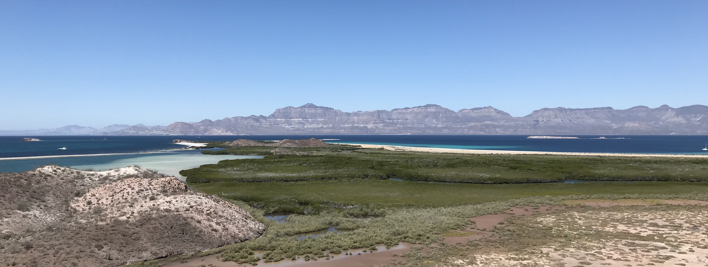
Background
Born and raised in Laguna Beach, CA, my admiration of the natural world was fostered in the blue waters of the Pacific ocean, where I frequently surfed and swam with the local inhabitants of the kelp forests. I started to venture out to the Sierra Nevada mountains where I learned to sit in in awe of its sharp granite and alpine lakes. Upon graduating high school, my connection to the environment brought me to northern California’s redwood forests where I attended the University of California, Santa Cruz. My education in Ecology and Evolutionary Biology, as well as Environmental Studies, planted initial seed of what would become my career as a scientist.
During my undergrad, I worked as lab and field techs doing whatever research jobs spoke to me at the time. One of my favorite experiences was camping out on a remote island in Baja California where I captured studies desert lizard and insect communities in cacti forests. I also worked quite a bit in Big Sur, analyzing the coastal California Steelhead communities and diets. And of course, I will never forget living in Puerto Rico for 3 months collecting microscopic protozoans in some harsh conditions. These experiences made me ever more curious, and were crucial in developing my skills in observing the natural world.
Upon graduating in 3 years, I moved to Mammoth Lakes in 2021 to pursue rock climbing, skiing, backpacking, and working as a freshwater ecologist at the Sierra Nevada Aquatic Research Center (SNARL). I frequented streams in the eastern Sierra doing field and lab work, with the goal of contributing to the scientific knowledge of benthic macroinvertebrate community ecology. I learned many of the skills that shape a successful scientist and make one really look at the world in a critical way. And I might have had a bit too much fun romping around in the mountains when he wasn’t working. My passion for learning drew me back to the coast in 2022 to start a masters program in the Bren School of Environmental Science and Management at UCSB where I remain today.

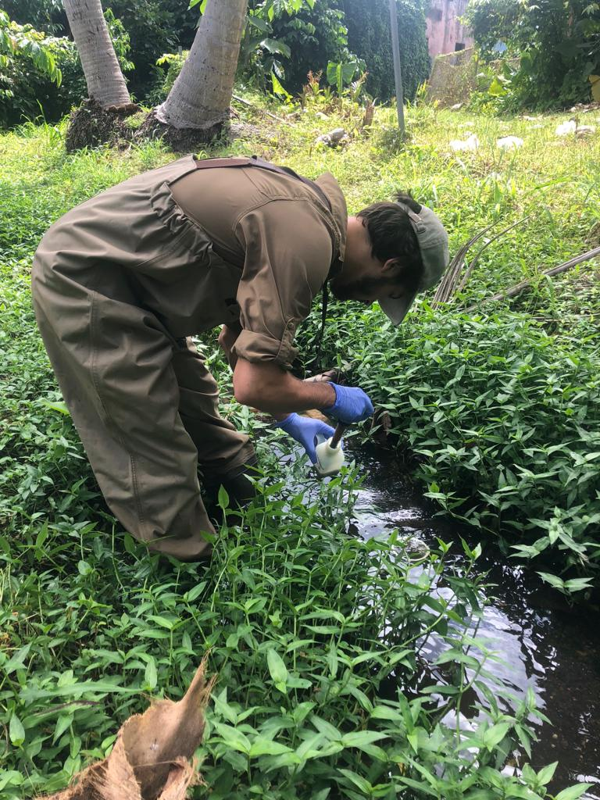
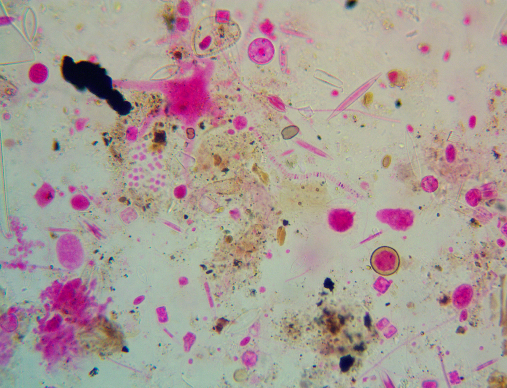
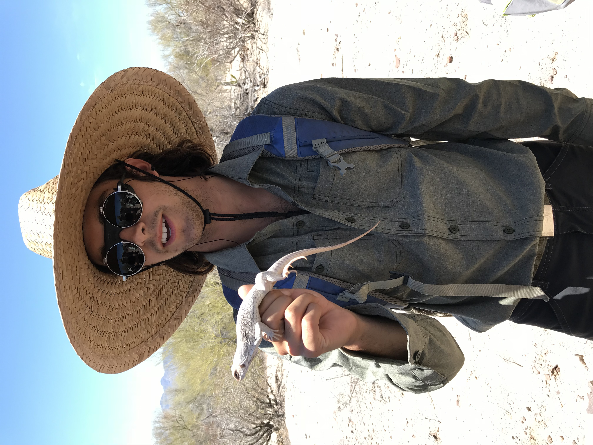
Environmental Data Science
While I am passionate about a variety of environmental topics, one underlying theme keeps the gears in my mind spinning: Environmental Data Science. Grappling, extracting, analyzing, and visualizing data are ways that one can make sense of the world around them, and that is just what I like to do. I serves as the data manager for his masters group project working with the National Oceanic and Atmospheric Administration (NOAA) where my team and I are modeling the costs of various Puget Sound Chinook habitat restorations methods. I have also been working with The Nature Conservancy where I am strengthening their Channel Islands Biosecurity team.
Aside from his masters work, I am particularly interested in working with big data to extract meaningful patterns and insights on how we can improve the state of the environment. Sometimes this looks like modeling the occupancy of invasive rats in Southern California that serve as threats to endemic species. Other times it looks like predicting the effects of a carbon tax on consumer and supplier demand of goods. Regardless of the task, as long as it involves working with data and contributes to solving environmental problems, you will usually get my attention.
In my free time, . . .
My brain suffers immensely when he feels that he can’t get outside and move at the end of the day. Equally as strong as my love for nature is my desire to immerse myself in it. Some of my favorite activities include: rock climbing, surfing, paragliding, spearfishing, running, backpacking, and practicing yoga. While I know I can’t do them all every day, I try my best to at least one of them… or 3. Here are some of my favorite memories over the years.
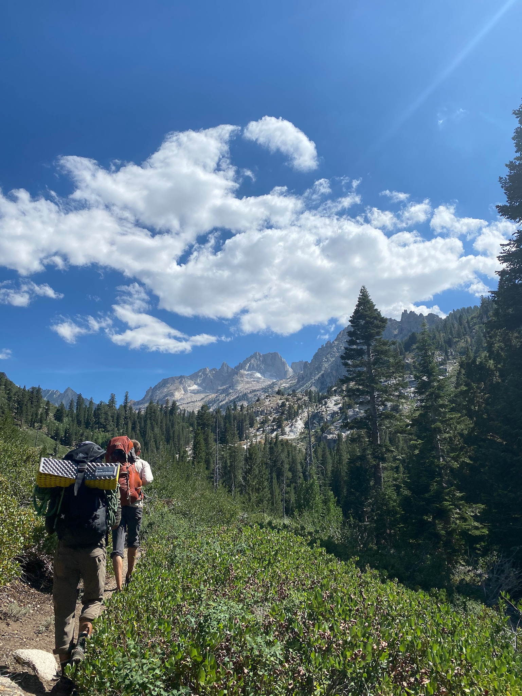
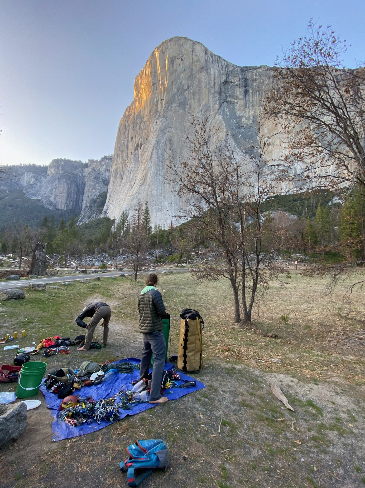
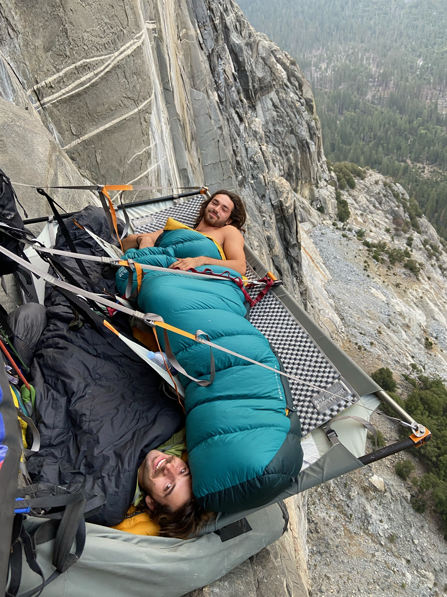

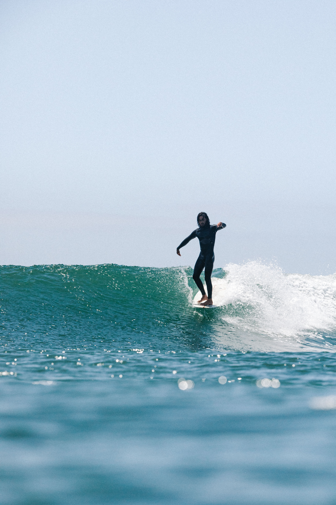
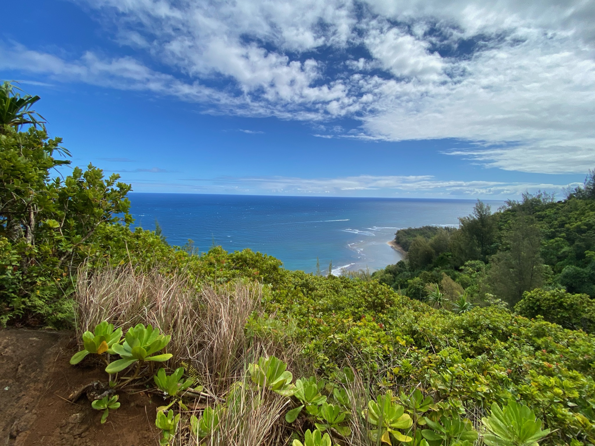
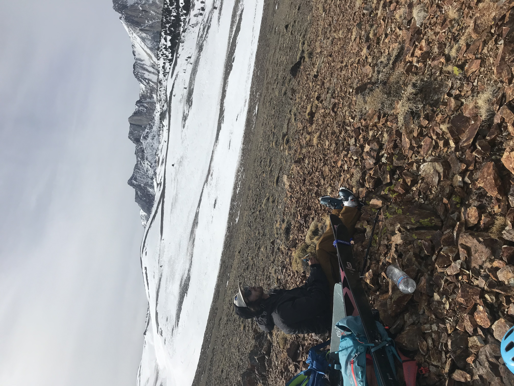
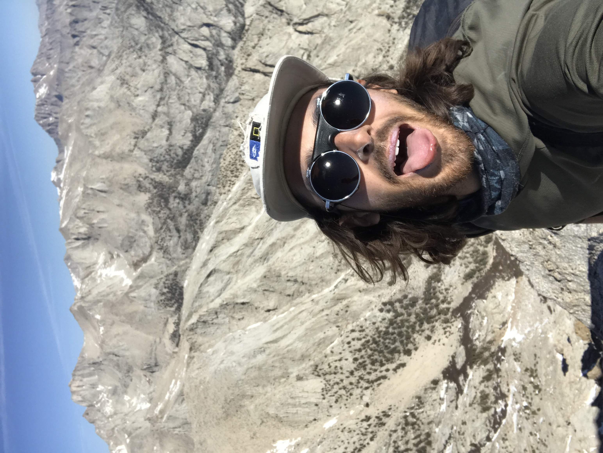
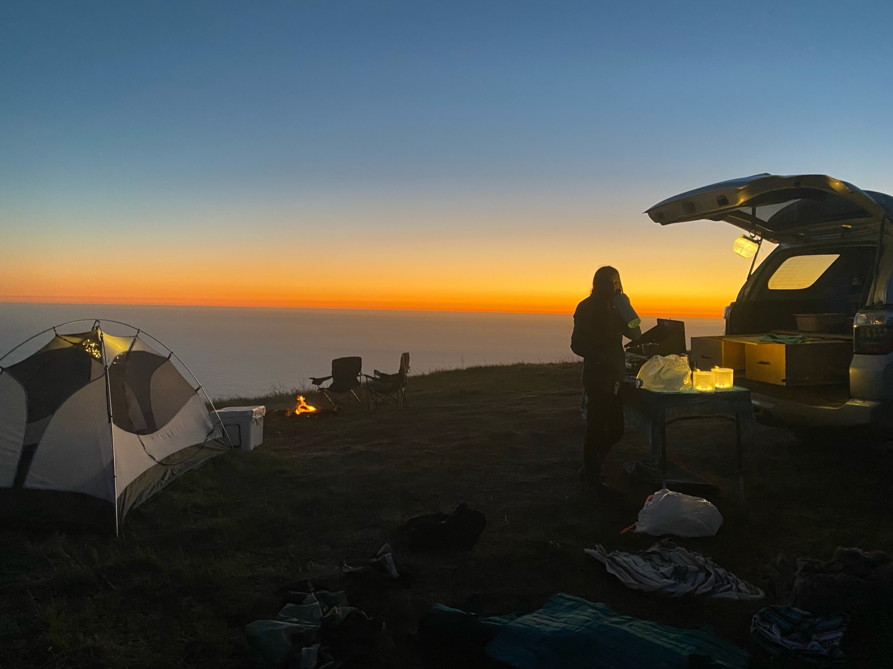